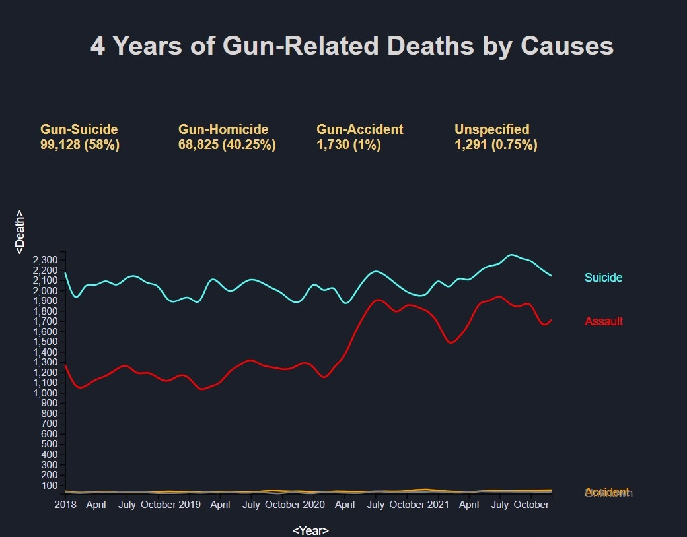
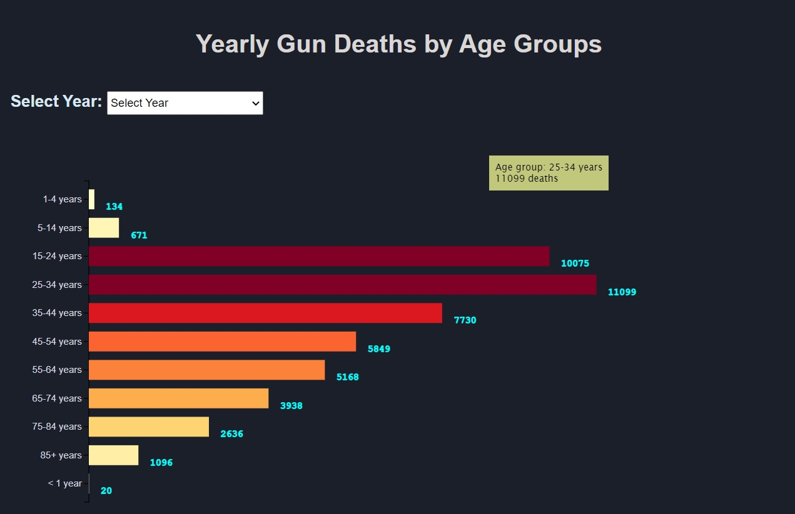
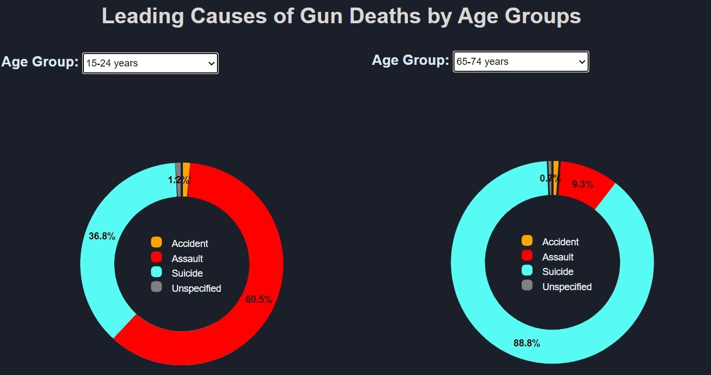
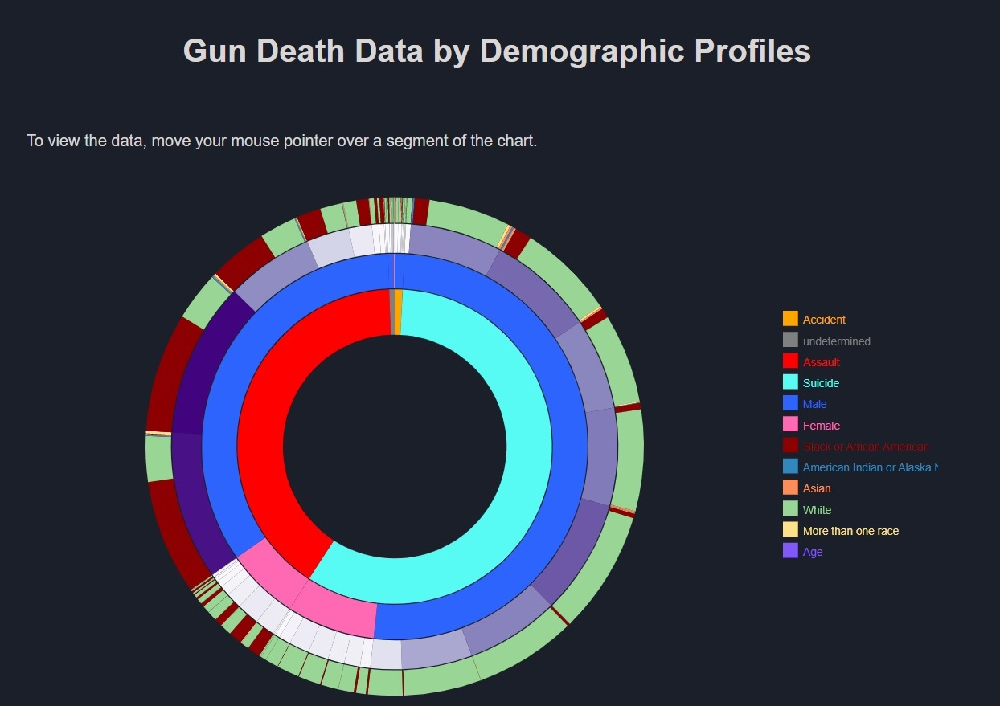
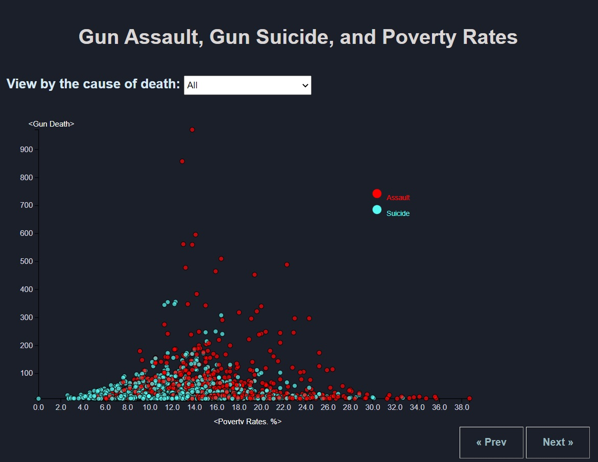

This country is suffering from perpetual gun violences, mass shootings, and gun suicides.
The nation's ongoing debate over gun controls versus gun ownership rights are ugly conflicts
that cost so many innocent lives every single day. While America should work hard to completely
abolish its pervasive gun culture deeply rooted in Colonialism, its strategies for reducing gun
deaths must be age, gender, race, and community specific.
This project is to visualize the U.S. firearm mortality between 2018 and 2021 to uncover causes
of gun deaths by age, race, and gender. It is also to visualize the association between
U.S. county poverty rates and firearm mortality, particularly gun homicides & suicides.
|  |
4 Years of Gun-Related Deaths by Causes: |
|
Yearly Gun Deaths by Age Groups: |
 |
|  |
Leading Causes of Gun Deaths by Age Groups: |
|
Gun Death Data by Demographic Profiles: |
> |
|  |
Gun Deaths and Poverty Rates: |